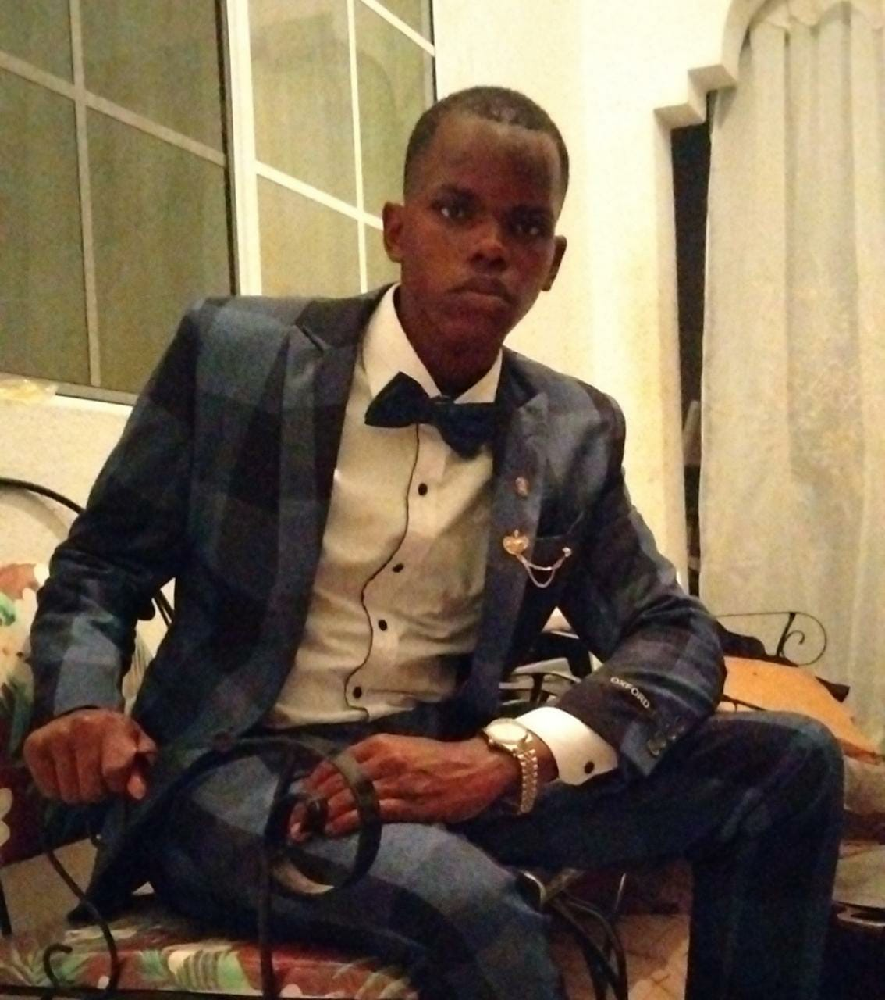
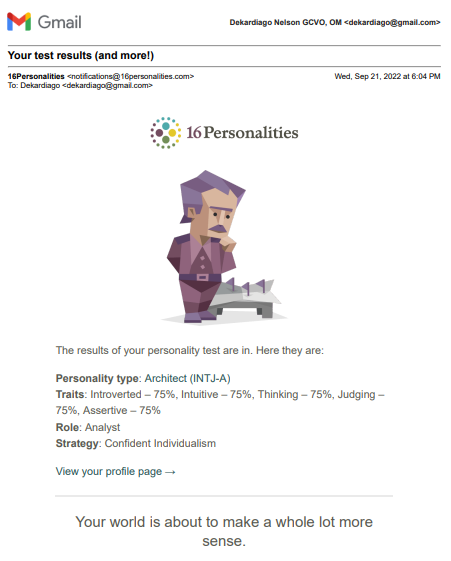

<!--
    Name: Dekardiago Nelson
    ID #: 2106568
    Tutor: C. Anuli
    Module: Web Programming | CIT2011
    Occurence: UM4
    Assessment: Individual Assignment 1
    Purpose: 
-->
<!DOCTYPE HTML>
<html lang="en"></html>
<html>
    <head>
        <meta charset="UTF-8"> 
        <meta http-equiv="X-UA-Compatible" content="IE=edge,chrome=1">
        <meta name="description" content="About Me">
        <meta name="Dekardiago Nelson" content="2106568">
        <meta name="viewport" content="width=device-width, initial-scale=1.0">
        <title>About Me</title>
    </head>

    <body background="Assets/BGGrayKeyBoard.jpg">
        <!-- HEADER START -->
        <table border="0" width="100%" cellpadding="0" cellspacing="0" bgcolor="black">
            <tr>
                <td>
                    <table border="0" width="85%" cellpadding="15" cellspacing="0" align="center" valign="top">
                        <tr>
                            <td>
                                
                            <td width="30%">&nbsp;&nbsp;</td>
                                
                                <td align="center"><a href="index.html" target="_blank">
                                    <font face="Courier New" color="#ffffff" size="4">
                                    Home
                                </a></font></td>

                                <td align="center"><a href="Portfolio.html" target="_blank">
                                    <font face="Courier New" color="#ffffff" size="4">
                                    Portfolio
                                </a></font></td>

                                <td align="center"><a href="About-Me.html">
                                    <font face="Courier New" color="#ffffff" size="4">
                                    About Me (Current)
                                </a></font></td>

                                <td align="center"><a href="Personal-Development.html" target="_blank">
                                    <font face="Courier New" color="#ffffff" size="4">
                                    Personal Development
                                </a></font></td>

                                <td align="center"><a href="Contact-Me.html" target="_blank">
                                    <font face="Courier New" color="#ffffff" size="4">
                                    Contact Me
                                </a></font></td>                 
                        </tr>
                    </table>
                </td>
            </tr>
        </table><br><br>
        <!-- HEADER END -->

        <!-- ABOUT ME START -->
        <table border="0" width="100%" cellpadding="0" cellspacing="0">
            <tr>
                <td>
                    <table border="0" width="85%" cellpadding="15" cellspacing="0" align="center">
                        <tr>
                            <td align="center" colspan="2"><big>
                                <font color="white" size="6" face="Courier New">
                                    About <b>Me</b>
                                </font>
                                </big>
                                <hr width="50%"></td><br>
                            <td width="0%"></td> 
                        </tr>
                        <tr>
                            <td align="center" colspan="2">
                                
                                <font face="Courier New" seze="3">
                                    The person whom you admired in the mirror yesterday is but a reminder of how you've improved
                                    to become the man/woman you are today. With that, never let the person who you were yesterday 
                                    be a competition to who you are today. Always strive to outshine the past you. ~ <b>Dekardiago Nelson</b>
                                </font> <br><br><br>
                            </td>
                        </tr>
                        <tr>
                            <td width="35%" valign="top" bgcolor="black">
                                <a href="mailto: dekardiago@gmail.com?subject=Personal Inquiry" target="_blank"></a><br>
                                <table border="0" width="100%" cellpadding="5" cellspacing="5" align="center" bgcolor="gray">
                                    <tr>
                                        <td bgcolor="#fa32"><b>Name:</b></td>
                                        <td bgcolor="white"><em>Dekardiago Delando Nelson</em></td>
                                    </tr>
                                    <tr>
                                        <td><b>Date of Birth:</b></td>
                                        <td  bgcolor="white"><em>21 June 2004</em></td>
                                    </tr>
                                    <tr>
                                        <td><b>Age:</b></td>
                                        <td  bgcolor="white"><em>18</em></td>
                                    </tr>
                                    <tr>
                                        <td><b>Personality Type:</b></td>
                                        <td  bgcolor="white"><a href="#My Personality"><em>INTJ-A</em></a></td>
                                    </tr>
                                    <tr>
                                        <td><b>Motto:</b></td>
                                        <td  bgcolor="white"><em><q>Business Before Pleasure</q></em></td>
                                    </tr>
                                    <tr>
                                        <td><b>House:</b></td>
                                        <td  bgcolor="white"><em>Mighty</em></td>
                                    </tr>
                                    <tr>
                                        <td><b>Father:</b></td>
                                        <td  bgcolor="white"><em>Chenault Campbell</em></td>
                                    </tr>
                                    <tr>
                                        <td><b>Mother:</b></td>
                                        <td  bgcolor="white"><em>Camala Smith</em></td>
                                    </tr>
                                    <tr>
                                        <td><b>Education:</b></td>
                                        <td  bgcolor="white"><em>St. Mary High School <br>University of Technology, Jamaica</em></td>
                                    </tr>
                                    <tr>
                                        <td><b>Signature:</b></td>
                                        <td  bgcolor="white"></td>
                                    </tr>
                                </table>
                            </td>
                            <td width="65%" valign="top">
                                <table border="0" width="100%" cellpadding="0" cellspacing="0" align="center"> 
                                    <tr>
                                        <td>
                                            <font face="Times New Roman" size="5" color="white">
                                                Dekardiago Nelson
                                            </font>
                                        </td>
                                    </tr>
                                    <tr>
                                        <td>
                                            <font face="Times New Roman" size="4" color="white">
                                                Student | Gamer | Programmer | Public Speaker | Debator
                                            </font>
                                        </td>
                                    </tr>
                                    <tr>
                                        <td>
                                            <p>
                                                <font face="arial" size="4" color="black">
                                                    A student by day, gamer and researcher by night. Dekardiago Nelson is an ambitious young Jamaican, who very much enjoys an adventure.
                                                    He believes that experience is not gained by the words or pictures from an book, but through our journeys into the beyond.
                                                    He has a deep passion for learning, and this is where his innovative persona derives. While he very much enjoys the benefits that 
                                                    the outdoors provides, he also values being to himself indoors.
                                                </font>
                                            </p>
                                        </td>
                                    </tr>
                                    <tr>
                                        <td>
                                            <p>
                                                <font face="arial" size="4" color="black">
                                                    As a 'gym rat', when Dekardiago isn't doing things fitnesss related, he's busy reading books, newpapers or magazines to keep himself
                                                    abreast with the daily happenings around the world, and also to build on his intelectual capacity. As per his interests, Dekardiago is 
                                                    an afficianado of the musical arts, artificial intelligence, nanotechnology, architecture/real estate, public service and any other subject
                                                    under the scope of technology and the future development of the human race.
                                                </font>
                                            </p>
                                        </td>
                                    </tr>
                                    <tr>
                                        <td>
                                            <p>
                                                <font face="arial" size="4" color="black">
                                                    Admitably, while he is not the most outgoing and socialable person, Dekardiago enjoys being socialable, albeit with a select few. He loves 
                                                    having intellectual conversations above all, as he believes things as 'small talks' and gossiping are but a waste of his time. He is currently
                                                    a member of the University of Techn Debating & Public Speaking Society (UDPSS) where he previously served as it's Editor in Chief and later
                                                    Director of Public Relations and Marketing. This granted him the pleasure of debating and sharing opinions of with a myriad of people, locally
                                                    and internationally. The last and by far the most memorable of these debates was the previous Worlds University Debating Championships (WUDC)
                                                    in the Summer of 2022 in Belgrade, Serbia.
                                                </font>
                                            </p>
                                        </td>
                                    </tr>
                                </table>  
                            </td>
                        </tr>
                        <tr>
                            <td colspan="2">
                                <p>
                                    <font face="arial" size="4" color="black">
                                        By virtue of his upbringing and faith, Dekardiago has a strong moral compass and embodies the 7 virtues. Although an introvert at heart, dekardiago
                                        does not shy away from from his moral obligations of helping thoes in need, regarldess of age, class or religion. He believes that each person is 
                                        master of their own destiny, and as such they should take responsibility for each of their actions, while being conscious of how it will affect them 
                                        and their surrounding.
                                    </font>
                                </p>
                                <p>
                                    <font face="arial" size="4" color="black">
                                        To describe himself, Dekardiago would say that he is 'aloof' and usually gives off a distant, mysterious, and nonchalant persona, especially to strangers.
                                        He however, is quite firendly up close and quite outgoing for his close associates. Despite his introverted nature, he has quite the sense of humer, always 
                                        trying to liven up a moody atmosphere. He enjoys being in the company of people who have the same goals as himself, and usually exudes the characteristics of 
                                        a strong and charismatic leader. He believes that aligning himself with people who challenge his thnking are wothwile asthis will help him and those around him 
                                        to realive their fill potential and do what they initialally deemed impossible...plus, it's quite lonely at the top. 
                                    </font>
                                </p>
                                <br>
                                <button type="button">
                                    <font face="arial" size="5"><a href="Assets/Dekardiago Nelson Resume.pdf">Download CV</a></font>
                                </button>
                            </td>
                        </tr>
                    </table>
                </td>
            </tr>
        </table>
    <hr size="10" color="gray"><br><br>
        <table border="1" width="100%" cellpadding="0" cellspacing="0">
            <tr>
                <td>
                    <table border="1" width="85%" cellpadding="15" cellspacing="0" align="center">
                        <tr>
                            <td align="center" colspan="2"><big>
                                <font color="white" size="5" face="Courier New">
                                    <a id="My Personality">My <b>Personality</b></a>
                                </font>
                                </big><hr width="40%"></td>
                            <td width="0%"></td> 
                        </tr>
                        <tr>
                            <td>
                                <p>
                                    <font face="arial" size="4" color="black">
                                        As per an assignment, Dekardiago took an accredited online personality test on <a href="https://www.16personalities.com">16personalities</a>. The results of the 
                                        test deemed him to be an INTJ-A (Introverted, Intuitive, Thinking, Judging, Architect). <br><br>
            
                                        Below in a screenshot of the result, <br><br><br>
                                        
                                        <center>
                                            
                                            <font face="Times New Roman" size="3">
                                                <br><i>Result from 16Personalities</i>
                                            </font>
                                        </center>
                                        
                                    </font>
                                </p>
                                <p>
                                    Firstly, Dekardiago is not one to study personality types; but he does have a bit of knowledge on astrology and the zodiacs. As described by 16Personalities, INTJ's 
                                    are very capable Individuals. They are very analytical and quick-witted, with their descisions usually being based entirely on logics rather than emotions. They are known
                                    to question everything, and will find the answer through their own discovery rather than relying on other people's expertise. <br><br>
                                    Some well known INTJ personalities include: <br>
                                    <ul>
                                        <li>Elon Musk</li>
                                        <li>Michelle Obama</li>
                                        <li>Christopher Nolan</li>
                                        <li>Arnold Schwarzenegger</li>
                                        <li>Bruce Wayne <i>(Batman Movies/Series)</i></li>
                                        <li>Yennefer of Vengerberg <i>(The Witcher Series)</i></li>
                                        <li>Petyr Baelish a.k.a Littlefinger <i>(Game of Throne)</i></li>
                                    </ul>
                                </p>
                                <p>
                                    According to Dekardiago, he was both suprised and inspired after reading the results and doing some research on the INTJ personality type.
                                    Being the person that he is, it is quite often the case that he is either misunderstood or left to walk a rather lonesome path. The detailed 
                                    report proved to be rather accurate and insightful, as it explicitly detailed the type of person that he is. Additionally, it helped him to 
                                    identify some of his strengths and weaknesses, and how to embrace and build on them. Thankfully, he is the type of person who continuously 
                                    strives to be better in every aspect of his life, and with this newfound knowledge, he will definately use it to better himself moving forward.
                                </p>
                            </td>
                        </tr>
                        <tr>
                            <td colspan="2" align="center">
                                <iframe width="560" height="315" src="https://www.youtube.com/embed/ugz0ttPYXF0?start=11085" title="YouTube video player" frameborder="0" 
                                allow="accelerometer; autoplay; clipboard-write; encrypted-media; gyroscope; picture-in-picture" allowfullscreen></iframe>
                            </td>
                        </tr>
                    </table>
                </td>
            </tr>
        </table>
        <!-- ABOUT ME END -->
    </body>
    <footer>
		<hr/>
        <center>
            <table border="0" width="20%" cellpadding="15" cellspacing="0">
                <tr bgcolor="gray">
                    <td align="center">
                        <a href="https://www.instagram.com/nianzu.07/" target="_blank"></a>
                    </td>
                    <td align="center">
                        <a href="https://www.facebook.com/dekardiagio.nelson.7/" target="_blank"></a>
                    </td>
                    <td align="center">
                        <a href="https://www.wattpad.com/user/Qiu_Nianzu" target="_blank"></a>
                    </td>
                    <td align="center">
                        <a href="mailto: dekardiago@gmail.com?subject=Personal Inquiry" target="_blank"></a>
                    </td>
                </tr>
            </table>
        </center>
		<table border="0" width="100%" cellpadding="15" cellspacing="0">
            <tr>
                <td colspan="4" bgcolor="grey">
                    <center>
                        <font face="Courier New">
                            <small>Dekardiago D. Nelson</small> <br>
                            <small>B.Sc. in Computing Student</small> <br>
                            <small>School of Computing & Engineering,</small> <br>
                            <small>University of Technology, Jamaica</small> <br><br>
                            <small>Palmetto Meadows,<br>Sandy Bay,<br>Clarendon, Jamaica</small> <br><br>
                        </font>
                    </center>
                </td> 
            </tr>          
        </table>
        
        <h5 align="left" size="7">Copyright &copy; Dekardiago Nelson, September 2022
	</footer> 
</html>
